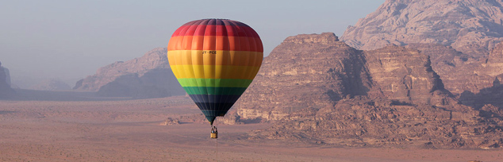

THE ROYAL AEROSPORTS CLUB OF JORDAN

The Royal Aero Sports Club was founded by His Majesty King Abdullah II in 1997. His Royal Highness Prince Hamzah Bin Al Hussein, an avid pilot and skydiver, is the President of the Club.
The club’s goals are to promote aero sports in Jordan, and to enhance the experience of tourists visiting Aqaba and Wadi Rum
RASCJ is a not-for-profit organization, registered with the HigherCouncil of Youth and Aqaba Special Economic Zone Authority cultural and social sports club.
SAFETY
For your own safety, all flights are subject to weather conditions and can be cancelled any time at pilot’s discretion.
NOTES
Dress casually (khakis, jeans or shorts) Bring a light jacket in the summer and a warm one in the winter as temperature drops dramatically as the balloo rises
A sun hat or cap is advisable Flat shoes are recommended
Float silently over Wadi Rum and enjoy the breathtaking natural rock formations. See the seven pillars of wisdom and the natural dunes of the desert from 6,000 feet. This unique experience is enhanced by our experienced pilot and his dedicated staff who will make sure every part of your experience is safe and enjoyable.Flights take place in the early morning for optimal flying conditions.

DURATION
45 min – 1 hour ( Allow 2 hours for the whole experience).
BASKET CAPACITY
Small: 3 persons min, 5 persons max. Large: 6 persons min, 16 persons max.
PRICES
Adults: 130 JD Children (6 years – 12 years): 65 JD
MEETING POINT
If staying in Wadi Rum at a camp inside the reserve: Visitor’s Center.
If staying in Wadi Rum at a camp outside the reserve: RASCJ driver will pick you up from your camp.
If staying in Aqaba: Dissi Petrol Station in Wadi Rum. We can also arrange for transport from Aqaba for a fee.
ULTRALIGHT
Discover Aqaba or Wadi Rum, Lawrences’ springs, the 7 Pillarsof Wisdom, or follow the ancient incense route from the comfort of our two-seat aircraft.